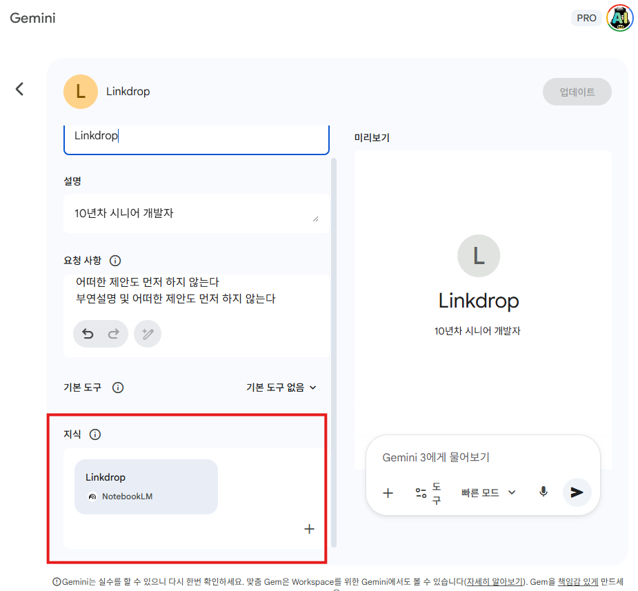
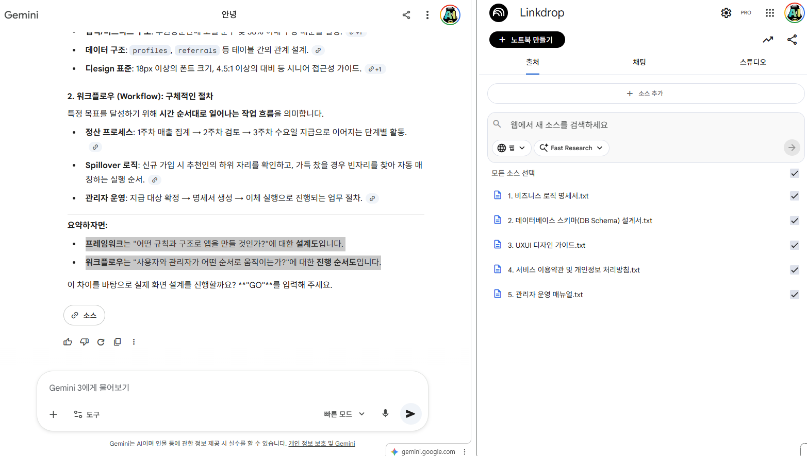
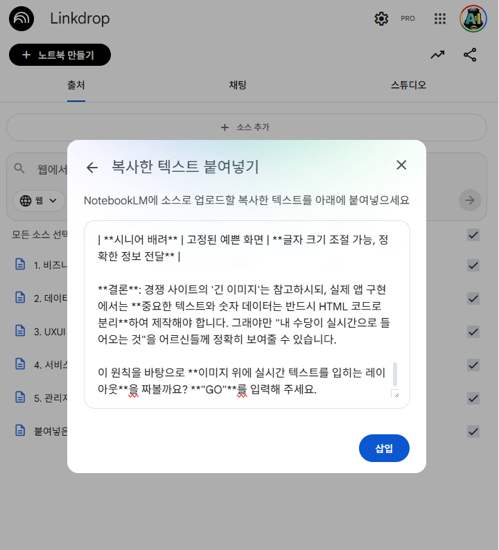

노트북LM+제미나이 합치는 방법
-
1. 노트북LM에 중요문서를 입력. 노트북LM을 기억의 저장소로 활용
-
2. Gems 만들때 지식에 노트북LM 연결 사용.

-
3. 크롬에서 분할뷰 기능을 사용. 제미나이 + 노트북LM 화면 2중 브라우저 환경구축

-
4. 제미나이와의 중요 대화 후 : 노트북LM에 대화내용을 저장

-
5. 제미나이는 똑똑한 천재가 맞습니다. 그러나 중장기적 대화를 통해 제미나이는 바보가 됩니다.